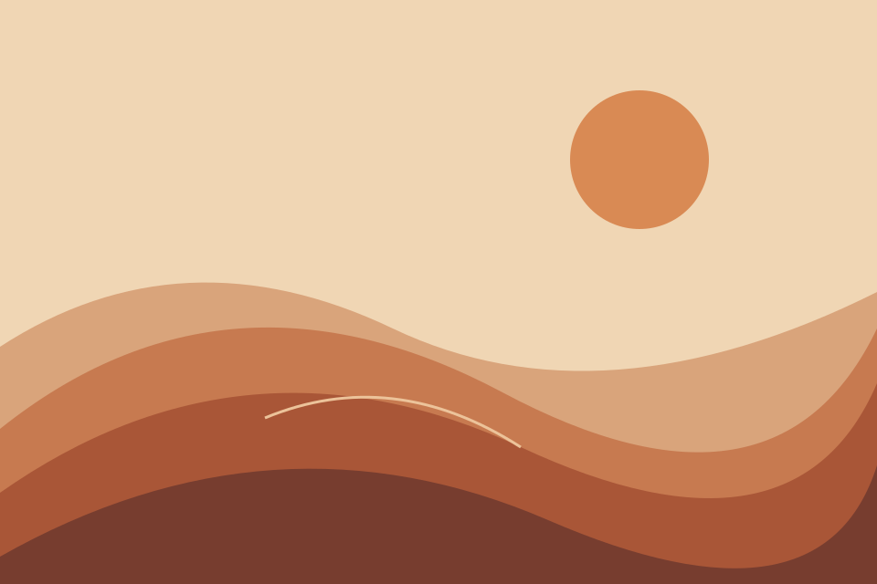

PART 02 / 05 — Visibility, fade & slide
A little motion. A big difference.
Explore three ways to reveal and hide content with jQuery.
Assylzhan Amangeldi/SE-2526
jQuery could not load. Check your internet connection and reload the
page.
TASK 02
Here. Gone. Back again.
Hide and show a paragraph, or toggle between the two states.
“The details are not the details.
They make the
design.”— Charles Eames
The paragraph is visible.
See the jQuery
$paragraph.hide();
$paragraph.show();
$paragraph.toggle();
TASK 03
Let it fade
Opacity changes gradually while the surrounding space stays still.

The image is visible.
See the jQuery
$image.fadeOut(400);
$image.fadeIn(400);
$image.fadeToggle(400);
TASK 04
Room for a little more
A collapsible panel uses vertical motion to reveal its contents.
The panel is expanded.
See the jQuery
$panel.slideUp(400);
$panel.slideDown(400);
$panel.slideToggle(400);